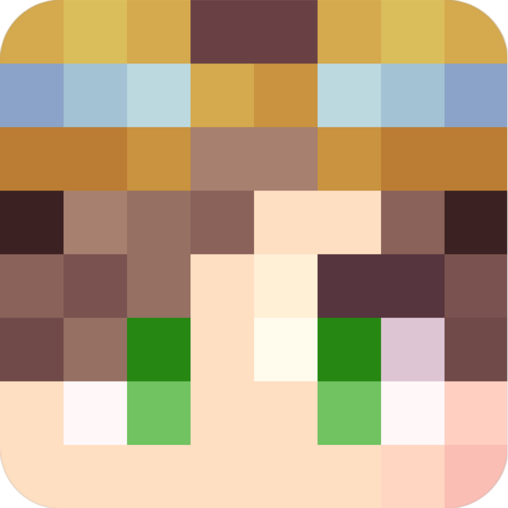

<!--
MomentariyModder Website 7.0.0 by MomentariyModder
The source code is available on GitHub!
-->

<!DOCTYPE html>
<html lang="en">
<head>
  <link rel="icon" href="../img/themes/standard/favicon.png">
  <title>Website: Update 7.0.0 | Blog | MomentariyModder</title>
  <meta name="viewport" content="width=device-width, initial-scale=1, maximum-scale=1" />
  <meta name="title" content="Website: Update 7.0.0 | Blog | MomentariyModder">
  <meta name="description" content="Welcome to my website! I am MomentariyModder, or as my friends and acquaintances often call me, Modder. I'm 19 years old, and I'm from Belarus (a small country in Europe bordering Russia and Ukraine). I also like to create almost any content for Minecraft, that is: mods, maps, resource packs, servers.">
  <meta name="keywords" content="Minecraft, Mods, MomentariyModder">
  <meta name="theme-color" content="#4bb4f1">


  <script src="https://code.jquery.com/jquery-3.3.1.min.js"></script>
  <script src="https://cdn.jsdelivr.net/npm/handlebars@latest/dist/handlebars.js"></script>
  <script src="https://mcapi.us/scripts/minecraft.min.js"></script>
  <script src="../js/main.js"></script>
  <script src="../config.js"></script>
  <script src="../js/lightbox.min.js"></script>
  <script src="https://cdn.jsdelivr.net/npm/@widgetbot/crate@3" async defer>
  new Crate({
    server: '696094539823448085',
    channel: '1156033421940891688'
  })
  </script>
  
  <script>tosAgreed = true</script>
  
  <link rel="stylesheet" href="https://cdnjs.cloudflare.com/ajax/libs/font-awesome/6.6.0/css/all.min.css"/>
  <link rel="stylesheet" href="../css/style.css">
  <link rel="stylesheet" href="../config.css">
  <link href="../css/lightbox.css" rel="stylesheet" media="all">

</head>


<body>

  <div id="target"></div>

  <script id="template" type="text/x-handlebars-template">

  <header>
    <div class="hero" id="hero">
      <a href="#!"><h1 style="padding-top: 3%;"></h1></a>
    <p> </p>
    <div class="news-card" align="center">
	  <a href="../" class="btn"><i class="fa-solid fa-house"></i> Home</a>
      <a href="../Blog" class="btn"><i class="fa-solid fa-newspaper"></i> Blog</a>
	  <a href="#links" class="btn"><i class="fa-solid fa-share"></i> Links</a>
    </div>
	<p> </p>
	</div>
  </header>
  
  <section class="dark" id="blog">
	<h1><i class="fa-solid fa-newspaper"></i> Blog</h1>
    <div id="news">
	<div class="news-card" align="center">
	<a>MISC</a><br>
	<a href="../img/blog/website-7.0.0/head.png" data-lightbox="roadtrip"></a>
	<h1 align="center">Website: Update 7.0.0</h1>
	<i>24.10.2024, 11:00</i><br>
	</div>
	<p>
	After many crazy days of work I am pleased to present Update 7.0.0 for the site!!
	<h4>New design Page for project</h4>
	The project page is now divided into tabs with their own meaning and functionality! By default there are only 3 tabs: Description, Changelog and Downloads.<br>
	<a href="../img/blog/website-7.0.0/img-n.png" data-lightbox="roadtrip"></a><br>
	<i>(Image 1)</i><br><br>
	This is the menu where you can switch between tabs.<br>
	<a href="../img/blog/website-7.0.0/img2-n.png" data-lightbox="roadtrip"></a><br>
	<i>(Image 2)</i><br><br>
	This is the Changelog tab, where you can find out all the project changes.<br>
	<a href="../img/blog/website-7.0.0/img3-n.png" data-lightbox="roadtrip"></a><br>
	<i>(Image 3)</i><br><br>
	This is the Downloads tab, where you can find links to download the latest versions of the project. And also links of the project on other platforms.<br>
	<a href="../img/blog/website-7.0.0/img4-n.png" data-lightbox="roadtrip"></a><br>
	<i>(Image 4)</i><br><br>
	There may also be exclusive tabs for projects. For example <a href="../projects/created-music-discs/compatible-mods">List of Сompatible mods</a> for <a href="../projects/created-music-discs">Created Music Discs</a>.<br><br>
	Projects that are supported at the time of release will get the new page design. <a href="../projects/applications">MomentariyModder'Applications</a> page was used for screenshots..
	<h4>Themes</h4>
	<a href="../img/blog/website-7.0.0/img5-n.png" data-lightbox="roadtrip"></a><br>
	<i>(Image 5)</i><br><br>
	Holiday themes have been added to the site. At the moment there are only 3 themes: Standard, Halloween and Christmas. The theme itself is an icon and a banner. The theme itself is an icon and a banner.<br></br>
	They will run on this schedule:<br>
	Standard - all year round, excluding the action of the other themes<br>
	Halloween - from October 1 to November 1<br>
	Christmas - December 1 through January 10
	<h4>Other changes</h4>
	- The “Support me by donating” field on the Home page has been changed to the same shape as the other fields in the “Information” section.<br>
	- The “Status” field has been moved under the “Support me by donating” field<br>
	- “Old news” was moved from the Blog page to a separate page. A “View Old News” button has been added to the main page and leads to it. Also a separate field was added on the Blogs page that leads to a separate page “Old news”.<br>
	- New screenshots have been added to the gallery. Also a separate gallery page has been added where more screenshots are located.<br>
	- The “View” buttons got a new icon. Also “See Page” button was replaced with “View Page” button<br>
	- Technical and other changes!
	</p>
	<p align="center"><i class="fa-solid fa-user"></i> MomentariyModder (Author)</p>
	</div>
	<p> </p>
	<div id="news">
	<div class="news-card" align="center">
	<h2>Comments will be back soon!</h2>
    </div>
    </div>	
  </section>
  <section class="dark">
	<div class="news-card" align="center">
	<a href="../blog/hi-telegram-and-da" class="btn2"><i class="fa-solid fa-arrow-left"></i> Previous post</a>
	<a href="../blog" class="btn2"><i class="fa-solid fa-newspaper"></i> Back to Blog</a>
	<a href="../blog/mma-8.1.0" class="btn2"><i class="fa-solid fa-arrow-right"></i> Next post</a>
	</div>
  </section>
  
  <section class="light">
    <h1><i class="fa-solid fa-share"></i> Links</h1>
    <div id="links" align="center">
	  <a href="https://discord.com/invite/9XqgjRd"></a> 
	  <a href="https://t.me/momentariymoddertgk"></a> 
	  <a href="https://twitter.com/momentariymoder"></a>	 
	  <a href="https://www.curseforge.com/members/momentariymodder"></a> 
	  <a href="https://modrinth.com/user/momentariymodder"></a> 
	  <a href="https://github.com/MomentariyModder"></a>
	  <a href="https://patreon.com/momentariymodder"></a>
	  <a href="https://boosty.to/momentariymodder"></a>
	  <a href="https://ko-fi.com/momentariymodder"></a>
	  <a href="https://www.buymeacoffee.com/momentariymodder"></a>
	  <a href="https://www.donationalerts.com/r/momentariymodder"></a>
    </div>
  </section>
  
  
  <footer>
    <a>&copy; 2019-2024 {{server_name}}. All Rights Reserved.</br>{{server_name}} is not affiliated with or endorsed by Mojang Studios or Microsoft<br>{{server_ip}}</a>
	<a></a>
	
  </footer>
  </script>
  <script src="../js/license.js"></script>
  
</body>
</html>